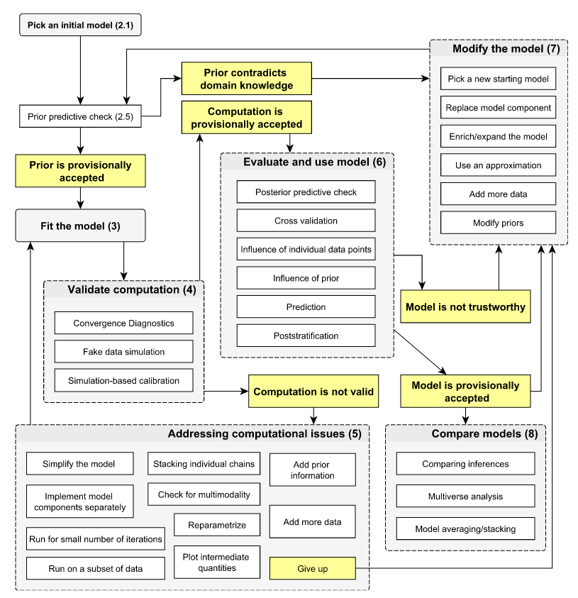
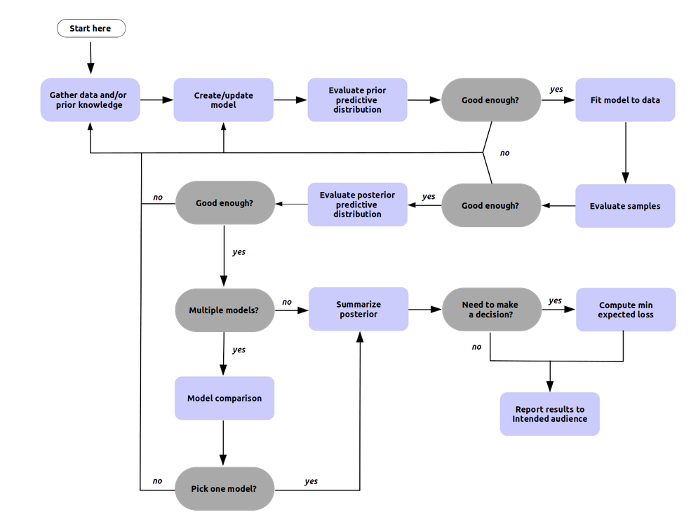
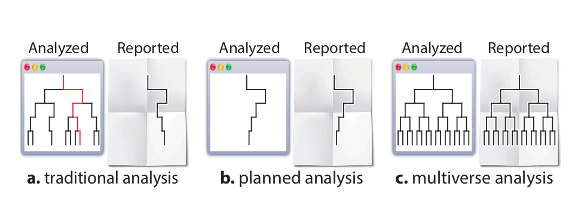
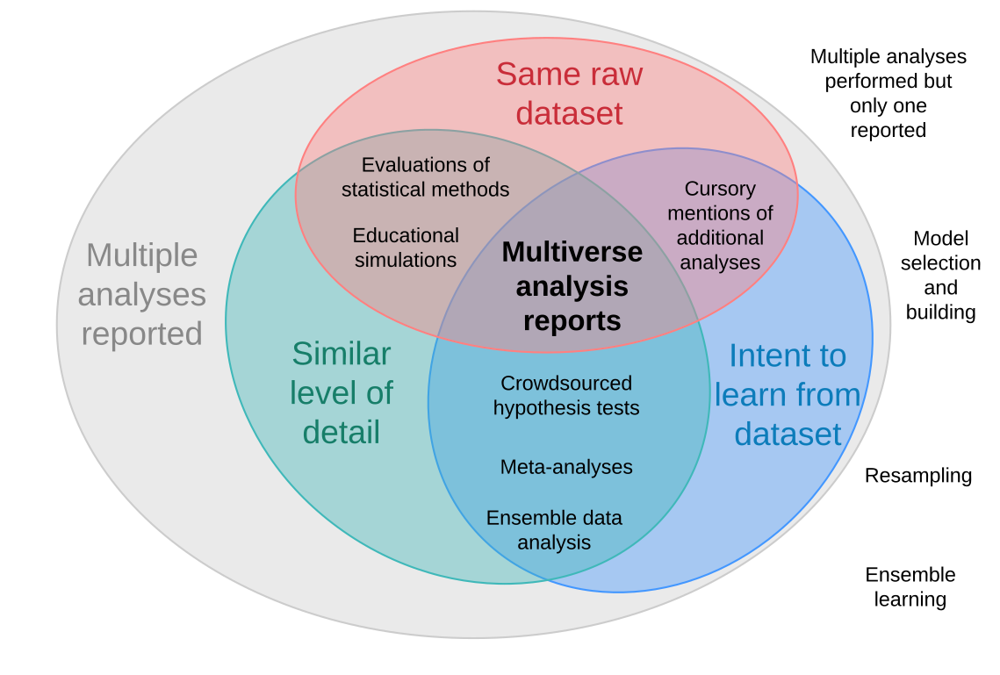
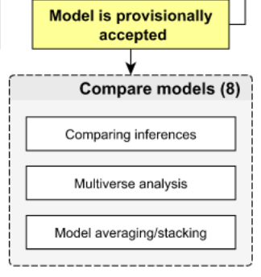

Bayesian Workflow and Multiverse Analysis
How can we combine transparent creation of sets of models (multiverse analysis) with recipes for model building and evaluation (Bayesian workflow) to support decision making in Bayesian model building scenarios?
Existing work1
- Bayesian workflow as introduced in Gelman et al. (2020), also discussed in e.g., Martin, Kumar, and Lao (2021) and a blogpost by Michael Betancourt2 etc.
- Bayesian model evaluation, comparison (e.g., Vehtari and Ojanen (2012), Piironen and Vehtari (2017))
- prior and likelihood sensitivity checks in \(\texttt{priorsense}\) \(\texttt{R}\)-package3 (Kallioinen et al. 2021)
- (posterior) calibration checks with Säilynoja, Bürkner, and Vehtari (2022)
- model comparison with \(\texttt{loo}\) \(\texttt{R}\)-package (Vehtari et al. 2022)
- multiverse analysis (Steegen et al. 2016) and \(\texttt{multiverse}\) \(\texttt{R}\)-package (Sarma et al. 2021)
- explorable multiverse analyses (Dragicevic et al. 2019)
- creating multiverse analysis scripts, exploring results with Boba (Liu et al. 2021)
- survey of visualisation of multiverse analyses (Hall et al. 2022)
- modular STAN (Bernstein, Vákár, and Wing 2020)
- modelling multiverse analysis (for machine learning) (Bell et al. 2022)
The following figures show two variants of flowcharts for Bayesian workflows with different levels of detail as well as crucial and optional steps4. Similarities are (1) moving back when needed (\(\to\) “iterativeness”) and (2) connections between model and computation.


Challenges in Bayesian workflows
- multi-attribute multi-objective scenarios
- navigating necessary vs. nice-to-have steps
- stopping criteria and sufficient exploration
- iterative model building, while transparent and robust
- double-dipping
- communicating results of multiple models
Transparent exploration



Example: brms::epilepsy
Dataset
For this case study, we use the dataset brms::epilepsy with 236 observations containing information on the following 9 variables, originally from Thall and Vail (1990) and Breslow and Clayton (1993):5
- \(\texttt{Age}\): age of patients in years
- \(\texttt{Base}\): seizure count at 8-weeks baseline
- \(\texttt{Trt}\): 0 or 1 indicating if patient received anti-convulsant therapy
- \(\texttt{patient}\): patient number
- \(\texttt{visit}\): session number from 1 (first visit) to 4 (last visit)
- \(\texttt{count}\): seizure count between two visits
- \(\texttt{obs}\): observation number (unique identifier for each observation)
- \(\texttt{zAge}\): Standardized Age
- \(\texttt{zBase}\): Standardized Base
References
Footnotes
I added this section to show resources that I am currently drawing from and to situate the following ideas in existing work. Also, this list might miss sth. important and I am happy to get pointers towards relevant resources.↩︎
https://betanalpha.github.io/assets/case_studies/principled_bayesian_workflow.html#1_Questioning_Authority↩︎
Another interesting variant of a flowchart for Bayesian workflow can be found in Michael Betancourt’s blogpost “Principled Bayesian Workflow”, see Appendix ?@sec-appendix.↩︎
More information in brms docs and in a vignette introducing the \(\texttt{R}\)-package \(\texttt{bayesian}\).↩︎